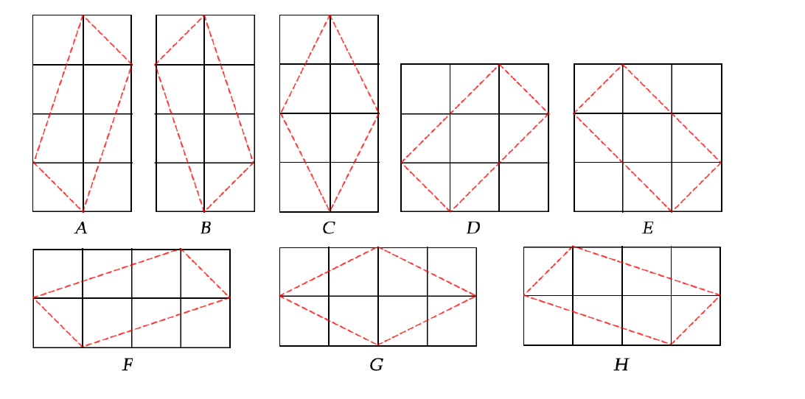
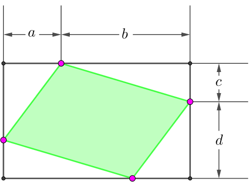

用 $f_n$ 表示满足下列条件的平行四边形 $P$ 的个数：
这里定义两个平行四边形 $P, Q$ 相同，如果可以通过平移操作使它们重合。
如，$f_4 = 8$，如下图所示：
现在给出面积下限 $lo$ 和面积上限 $hi$，求 $$ \mathop{\arg\max}_{lo \leq a \leq hi} f_a \text{ 和 } \max_{lo \leq a \leq hi} f_a $$ 的值 (如果有多个 $a$ 满足 $f_a$ 最大则输出 $a$ 最小的)。
第一行包含一个正整数 $n$ ($n \leq 500$)，表示数据组数。
对于每组数据，共一行，包含两个正整数 $lo, hi$ ($1 \leq lo \leq hi \leq 5 \times 10^5$)，分别表示面积的下限和上限。
对于每组数据，输出一行，包含两个整数，分别表示 $\mathop{\arg\max}\limits_{lo \leq a \leq hi} f_a$ 和 $\max\limits_{lo \leq a \leq hi} f_a$ 的值。如果有多个 $a$ 满足 $f_a$ 最大值，输出 $a$ 最小的。
观察可知，一个满足条件 (1) (2) 的平行四边形可以和四个正整数构成的四元组 $\left( a, b, c, d \right)$ 进行一一对应，如下图所示：
经过简单计算可知，这个平行四边形的面积等于 $$ \left| \left( -a, -d \right) \times \left( b, -c \right) \right| = a c + b d $$
于是由定义，\begin{align*} f_n &= \sum_{\substack{a, b, c, d \in \mathbb N^* \\ a c + b d = n}} 1 \\ &= \sum_{\substack{l, r \in \mathbb N^* \\ l + r = n}} \left( \sum_{a c = l} 1 \right) \left( \sum_{b d = r} 1 \right) \\ &= \sum_{\substack{l, r \in \mathbb N^* \\ l + r = n}} d \left( l \right) \cdot d \left( r \right) \\ &= \sum_{i=1}^{n-1} d \left( i \right) \cdot d \left( n - i \right) \end{align*} 其中 $d \left( n \right)$ 为除数函数，表示 $n$ 的正因子个数。
于是可以通过线性筛和 FFT/NTT 得到 $\left\{ f_n \right\}$ 数组，最后通过暴力或 RMQ 来处理询问。时间复杂度 $O \left( M \log M + n M \right)$ 或 $O \left( M \log M + n \right)$ ($M = \max hi$)。
(经过验证，最大的答案不超过 $1.7 \times 10^8$，因此直接使用 NTT 也是可以的)
#include <bits/stdc++.h>
#define lg2 std::__lg
using std::cin;
using std::cout;
typedef unsigned long long u64;
const int N = 1050000, mod = 998244353, iv2 = (mod + 1) / 2, unity = 31;
typedef int vec[N], *pvec;
vec inv, fact, finv;
inline int min(const int x, const int y) {return x < y ? x : y;}
inline int max(const int x, const int y) {return x < y ? y : x;}
inline int & reduce(int &x) {return x += x >> 31 & mod;}
inline int & neg(int &x) {return x = (!x - 1) & (mod - x);}
u64 PowerMod(u64 a, int n, u64 c = 1) {for (; n; n >>= 1, a = a * a % mod) if (n & 1) c = c * a % mod; return c;}
namespace poly_base {
int l, n; u64 iv; vec w2;
void init(int n = N, bool dont_calc_factorials = true) {
int i, t;
for (inv[1] = 1, i = 2; i < n; ++i) inv[i] = u64(mod - mod / i) * inv[mod % i] % mod;
if (!dont_calc_factorials) for (*finv = *fact = i = 1; i < n; ++i) fact[i] = (u64)fact[i - 1] * i % mod, finv[i] = (u64)finv[i - 1] * inv[i] % mod;
t = min(n > 1 ? lg2(n - 1) : 0, 21),
*w2 = 1, w2[1 << t] = PowerMod(unity, 1 << (21 - t));
for (i = t; i; --i) w2[1 << (i - 1)] = (u64)w2[1 << i] * w2[1 << i] % mod;
for (i = 1; i < n; ++i) w2[i] = (u64)w2[i & (i - 1)] * w2[i & -i] % mod;
}
inline void NTT_init(int len) {n = 1 << (l = len), iv = mod - (mod - 1) / n;}
void DIF(int *a) {
int i, *j, *k, len = n >> 1, R, *o;
for (i = 0; i < l; ++i, len >>= 1)
for (j = a, o = w2; j != a + n; j += len << 1, ++o)
for (k = j; k != j + len; ++k)
R = (u64)*o * k[len] % mod, reduce(k[len] = *k - R), reduce(*k += R - mod);
}
void DIT(int *a) {
int i, *j, *k, len = 1, R, *o;
for (i = 0; i < l; ++i, len <<= 1)
for (j = a, o = w2; j != a + n; j += len << 1, ++o)
for (k = j; k != j + len; ++k)
reduce(R = *k + k[len] - mod), k[len] = u64(*k - k[len] + mod) * *o % mod, *k = R;
}
inline void DNTT(int *a) {DIF(a);}
inline void IDNTT(int *a) {
DIT(a), std::reverse(a + 1, a + n);
for (int i = 0; i < n; ++i) a[i] = a[i] * iv % mod;
}
inline void DIF(int *a, int *b) {memcpy(b, a, n << 2), DIF(b);}
inline void DIT(int *a, int *b) {memcpy(b, a, n << 2), DIT(b);}
inline void DNTT(int *a, int *b) {memcpy(b, a, n << 2), DNTT(b);}
inline void IDNTT(int *a, int *b) {memcpy(b, a, n << 2), IDNTT(b);}
}
int pn = 0, c[500000], p[41554], d[N], de[500000];
vec f;
void sieve(int n) {
int i, j, v; d[1] = 1;
memset(c, -1, sizeof c);
for (i = 2; i <= n; ++i) {
if (!~c[i]) p[pn] = i, c[i] = pn++, d[i] = 2, de[i] = 1;
for (j = 0; (v = i * p[j]) <= n && j < c[i]; ++j) c[v] = j, d[v] = (de[v] = d[i]) * 2;
if (v <= n) c[v] = j, d[v] = d[i] + de[i], de[v] = de[i];
}
}
void work() {
int i;
namespace pb = poly_base;
sieve(499999), pb::init(), pb::NTT_init(20), pb::DIF(d);
for (i = 0; i < pb::n; ++i) d[i] = (u64)d[i] * d[i] % mod;
pb::DIT(d);
for (i = 2; i <= 500000; ++i) f[i] = d[pb::n - i] * pb::iv % mod;
}
int main() {
int i, l, r, q;
std::ios::sync_with_stdio(false), cin.tie(NULL);
work();
for (cin >> q; q; --q)
cin >> l >> r, i = std::max_element(f + l, f + (r + 1)) - f,
cout << i << ' ' << f[i] << '\n';
return 0;
}
坑1：注意卷积的长度是 $10^6$ 而不是 $5 \times 10^5$。